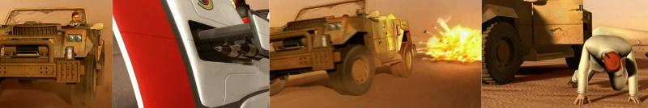

|
| |
Project 1 | Project 2 |Project 3 (Team Project) |
Paper Presentation | Final Project
Introduction | [9.18 - 9.30]: Run | [9.34 - 9.37]: Hittin' the rock |
[9.38 - 9.41]: Off the car! | [9.44 - 9.48]: Round and round
INTRODUCTION
Here I'm going to present a technical critique of a small piece of CG animation,
taken from an episode of Gerry Anderson's New Captain Scarlet. The discussion will
try to point out several imperfections noticeable in the clip. These errors will
be either dependent on the way the animation has been done, or they will be linked
to the actual rendering of a scene (i.e. lacking features in the models, wrong lighting
and so on). There are also points in the clip in which the animation or the overall
rendering effect work quite well instead: those points will be discussed as well.
The selected clip starts at 9.18 minutes from the episode beginning and lasts roughly
30 seconds. In this sequence captain Scarlet is chasing some kind of spy that may
have precious information about stuff (yes, we really care about the plot here).
Being the hero that he's supposed to be, Scarlet manages to get the bad guy lose
control of his car (by firing rockets...) and finally catches him.

A number of pretty common computer animation and CG techniques are used throughout
this scene. The movement of the car, of the bike and the camera is most likely done
using standard keyframing, while character movements (like the ones we can see at
the end of the clip) are created using motion capture data. The camera stands on
character heads for very little time during this clip, but this is enough to infer
that facial animation was probably based on a keyframed deformation of the face
mesh through control points (i.e. no mocap data was used to animate the face / head).
Other additional CG techniques present in this clip include particle systems, used
to animate dust trails behind vehicles, smoke and explosions.
The solution of some of these imperfections we are going to point out along
the clip will be straightforward. In
other cases a possible solution will still be available but we'll see how its application
might result difficult from the technical point of view, or just because of the
time required to implement it.
|
|
|
 |
|